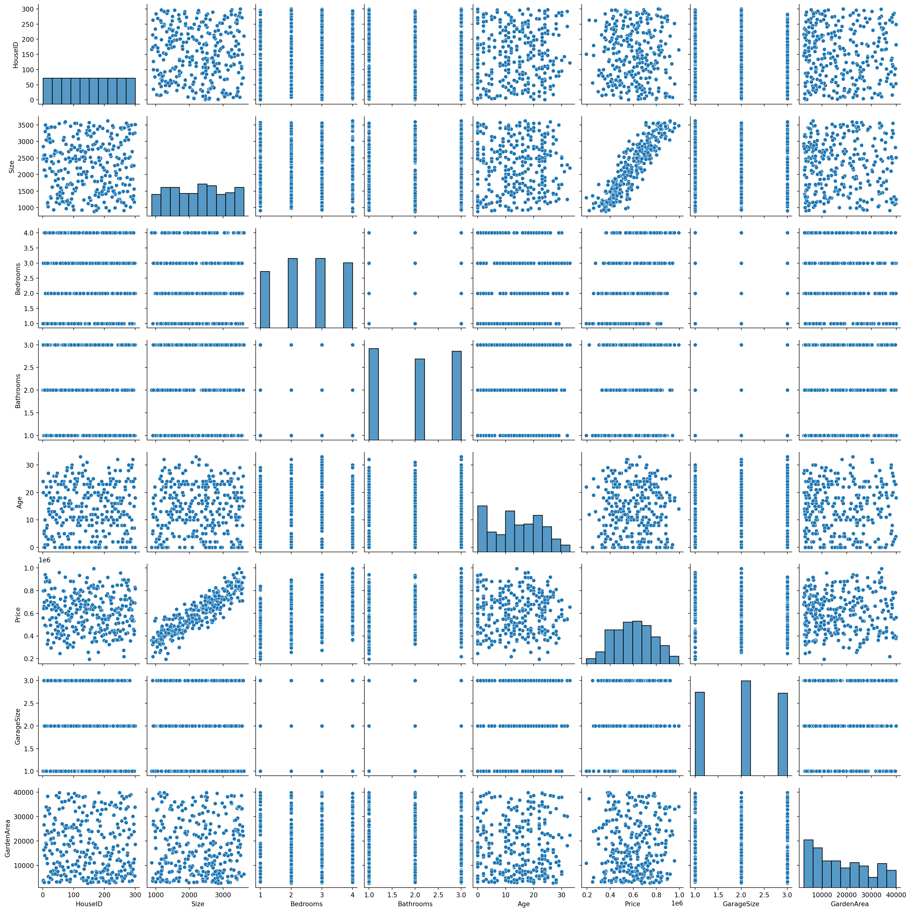
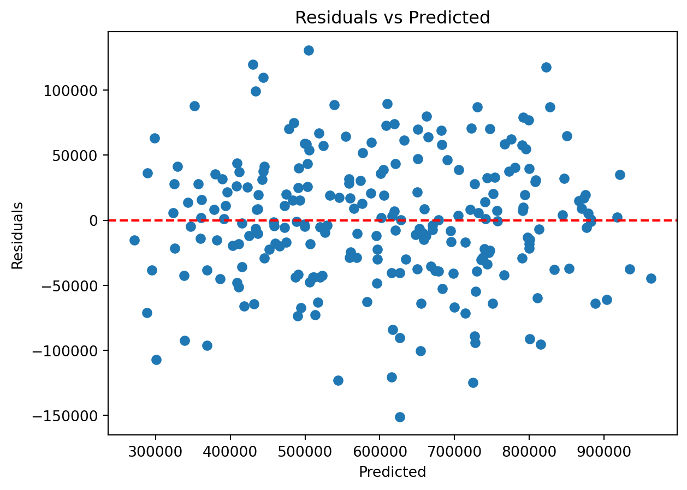
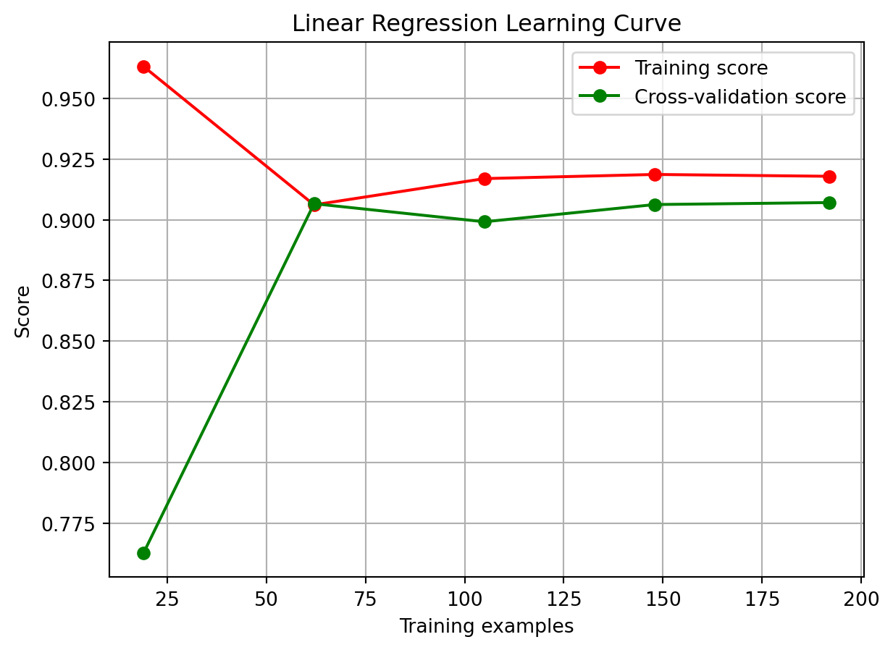
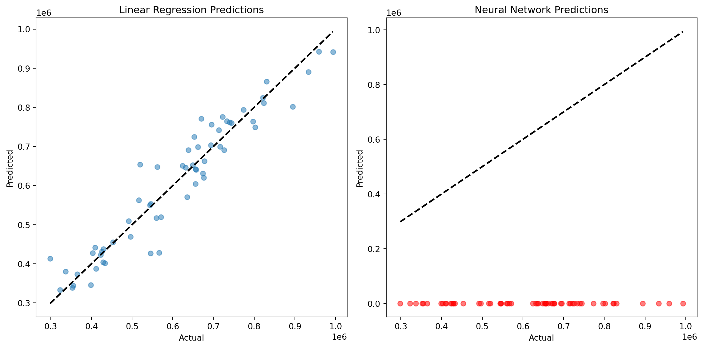
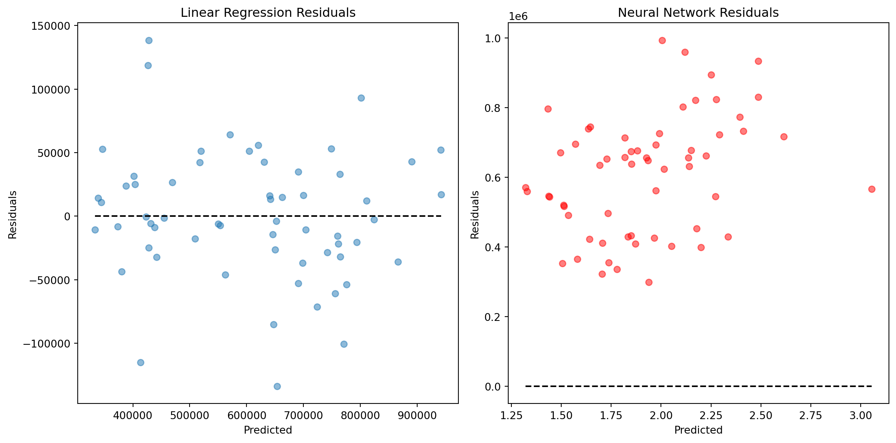

import pandas as pd
import numpy as np
from sklearn.model_selection import train_test_split
from sklearn.preprocessing import StandardScaler, OneHotEncoder
import matplotlib.pyplot as plt
from sklearn.impute import SimpleImputer
import seaborn as sns
from sklearn.compose import ColumnTransformer
from sklearn.pipeline import Pipeline
import statsmodels.api as sm
import matplotlib.pyplot as plt
from sklearn.linear_model import LinearRegression
from sklearn.metrics import mean_squared_error, r2_score
from sklearn.model_selection import cross_val_score
from sklearn.ensemble import RandomForestRegressor
from sklearn.model_selection import GridSearchCV
from sklearn.preprocessing import PolynomialFeatures
from sklearn.model_selection import learning_curve
from sklearn.ensemble import GradientBoostingRegressor
from sklearn.svm import SVR
from sklearn.neural_network import MLPRegressor
# Load the dataset
housing_df = pd.read_csv('modified_housing_data.csv')
# Handling missing values if any
imputer = SimpleImputer(strategy='mean')
housing_df[['Size', 'GardenArea']] = imputer.fit_transform(housing_df[['Size', 'GardenArea']])
# One-hot encoding and Scaling
categorical_features = ['Neighborhood']
numerical_features = ['Size', 'Bedrooms', 'Bathrooms', 'Age', 'GarageSize', 'GardenArea']
# Create transformers
one_hot = OneHotEncoder()
scaler = StandardScaler()
# Column transformer
preprocessor = ColumnTransformer(
transformers=[
('num', scaler, numerical_features),
('cat', one_hot, categorical_features)
])
# Preprocessing pipeline
prep_pipeline = Pipeline(steps=[('preprocessor', preprocessor)])
# Splitting the data
X = housing_df.drop(['HouseID', 'Price'], axis=1)
y = housing_df['Price']
X_train, X_test, y_train, y_test = train_test_split(X, y, test_size=0.2, random_state=42)
X_train_prep = prep_pipeline.fit_transform(X_train)
X_test_prep = prep_pipeline.transform(X_test)Advanced analysis on Linear and Non-Linear Regression models
Machine Learning
A Comprehensive Analysis on Housing Market. Utilizing regression methodologies for the purpose of analyzing trends within the housing market
A Comprehensive Analysis on Housing Market
Utilizing linear and non-linear regression methodologies for the purpose of analyzing trends within the housing market
Introduction
In machine learning, linear and nonlinear regression are fundamental techniques used to model relationships between variables, such as predicting housing prices based on various features in a dataset.
Linear Regression is a straightforward method that assumes a linear relationship between the input features (e.g., square footage, number of bedrooms) and the target variable (housing price). It aims to find the best-fit line that minimizes the difference between predicted and actual values. Linear regression is interpretable and works well when the relationship is approximately linear.
Nonlinear Regression, on the other hand, allows for more complex relationships. It can capture curves, bends, and nonlinear patterns in the data. This is particularly useful when housing prices may depend on interactions between features or exhibit nonlinear behavior.
The housing dataset you are using provides a rich source of information to apply both linear and nonlinear regression techniques. By utilizing these methods, you can build predictive models that estimate housing prices accurately, taking into account the specific relationships between features and target variables, whether they are linear or nonlinear in nature. These models can guide real estate decisions, investment strategies, and market analyses more effectively, ultimately benefiting both buyers and sellers in the housing market.
We will start by loading the dataset and performing basic preprocessing, including encoding categorical variables and feature scaling.
Exploring the Dataset and Data Preprocessing
Visualizing Market Trend
#Visualizing the distributions and relationships
sns.pairplot(housing_df)
plt.show()
Advanced Linear Regression Analysis
For the linear regression model, we’ll include feature importance analysis and cross-validation.
# Linear Regression Model
linear_model = LinearRegression()
linear_model.fit(X_train_prep, y_train)
# Cross-Validation
cv_scores = cross_val_score(linear_model, X_train_prep, y_train, cv=5, scoring='neg_mean_squared_error')
print("CV MSE for Linear Regression:", -np.mean(cv_scores))
# Predictions and Evaluation
y_pred_linear = linear_model.predict(X_test_prep)
mse_linear = mean_squared_error(y_test, y_pred_linear)
r2_linear = r2_score(y_test, y_pred_linear)
print("Linear Regression Test MSE:", mse_linear)
print("Linear Regression Test R2:", r2_linear)CV MSE for Linear Regression: 2618960221.1247973
Linear Regression Test MSE: 2520672652.9396286
Linear Regression Test R2: 0.9111757572070075Advanced Non-Linear Regression Analysis
We’ll apply a more complex non-linear model, such as a Random Forest Regressor, and perform hyperparameter tuning using GridSearchCV.
# Non-Linear Model - Random Forest Regressor
rf_model = RandomForestRegressor(random_state=42)
# Hyperparameter Grid
param_grid = {
'n_estimators': [100, 200, 300],
'max_features': ['sqrt', 'log2', None], # Removed 'auto' and added None
'max_depth': [10, 20, 30, None],
'min_samples_split': [2, 5, 10],
'min_samples_leaf': [1, 2, 4]
}
# Grid Search
grid_search = GridSearchCV(estimator=rf_model, param_grid=param_grid, cv=3, n_jobs=-1, scoring='neg_mean_squared_error', verbose=2)
grid_search.fit(X_train_prep, y_train)
# Best Model
best_rf_model = grid_search.best_estimator_
# Predictions and Evaluation
y_pred_rf = best_rf_model.predict(X_test_prep)
mse_rf = mean_squared_error(y_test, y_pred_rf)
r2_rf = r2_score(y_test, y_pred_rf)
print("Random Forest Test MSE:", mse_rf)
print("Random Forest Test R2:", r2_rf)Fitting 3 folds for each of 324 candidates, totalling 972 fits
Random Forest Test MSE: 3815896212.7555285
Random Forest Test R2: 0.865534268688408Advanced Regression Analysis
1. Exploring Feature Interactions
Feature interactions can reveal complex relationships that might not be captured by individual features alone.
# Adding interaction terms
poly = PolynomialFeatures(degree=2, interaction_only=True, include_bias=False)
X_train_poly = poly.fit_transform(X_train_prep)
X_test_poly = poly.transform(X_test_prep)
# Re-training Linear Regression with Interaction Terms
linear_model_interact = LinearRegression()
linear_model_interact.fit(X_train_poly, y_train)
# Evaluating the model with interaction terms
y_pred_interact = linear_model_interact.predict(X_test_poly)
mse_interact = mean_squared_error(y_test, y_pred_interact)
print("MSE with Interaction Terms:", mse_interact)MSE with Interaction Terms: 2983950454.93496372. Model Diagnostics for Linear Regression
Checking assumptions and diagnostics of linear regression to ensure the validity of the model.
# Model Diagnostics
X_train_sm = sm.add_constant(X_train_prep) # Adding a constant
model = sm.OLS(y_train, X_train_sm).fit()
print(model.summary())
# Residuals plot
plt.scatter(model.predict(X_train_sm), model.resid)
plt.xlabel('Predicted')
plt.ylabel('Residuals')
plt.axhline(y=0, color='red', linestyle='--')
plt.title('Residuals vs Predicted')
plt.show() OLS Regression Results
==============================================================================
Dep. Variable: Price R-squared: 0.917
Model: OLS Adj. R-squared: 0.914
Method: Least Squares F-statistic: 283.3
Date: Sun, 10 Dec 2023 Prob (F-statistic): 3.91e-119
Time: 20:22:05 Log-Likelihood: -2932.4
No. Observations: 240 AIC: 5885.
Df Residuals: 230 BIC: 5920.
Df Model: 9
Covariance Type: nonrobust
==============================================================================
coef std err t P>|t| [0.025 0.975]
------------------------------------------------------------------------------
const 4.798e+05 2602.372 184.377 0.000 4.75e+05 4.85e+05
x1 1.56e+05 3262.250 47.819 0.000 1.5e+05 1.62e+05
x2 5.035e+04 3267.184 15.410 0.000 4.39e+04 5.68e+04
x3 2.194e+04 3304.761 6.640 0.000 1.54e+04 2.85e+04
x4 -1.011e+04 3260.647 -3.100 0.002 -1.65e+04 -3684.133
x5 -2624.2257 3281.530 -0.800 0.425 -9089.930 3841.478
x6 -41.7240 3263.210 -0.013 0.990 -6471.330 6387.882
x7 1.215e+05 5467.126 22.218 0.000 1.11e+05 1.32e+05
x8 1.26e+05 5609.374 22.456 0.000 1.15e+05 1.37e+05
x9 1.184e+05 6164.082 19.216 0.000 1.06e+05 1.31e+05
x10 1.139e+05 5567.918 20.463 0.000 1.03e+05 1.25e+05
==============================================================================
Omnibus: 0.912 Durbin-Watson: 2.215
Prob(Omnibus): 0.634 Jarque-Bera (JB): 0.697
Skew: -0.123 Prob(JB): 0.706
Kurtosis: 3.097 Cond. No. 6.20e+15
==============================================================================
Notes:
[1] Standard Errors assume that the covariance matrix of the errors is correctly specified.
[2] The smallest eigenvalue is 7.83e-30. This might indicate that there are
strong multicollinearity problems or that the design matrix is singular.
3. Learning Curves
Understanding how model performance changes as the training set size increases.
# Learning curve function
def plot_learning_curve(estimator, X, y, title):
train_sizes, train_scores, test_scores = learning_curve(estimator, X, y, cv=5, n_jobs=-1, train_sizes=np.linspace(.1, 1.0, 5))
train_scores_mean = np.mean(train_scores, axis=1)
test_scores_mean = np.mean(test_scores, axis=1)
plt.figure()
plt.title(title)
plt.xlabel("Training examples")
plt.ylabel("Score")
plt.plot(train_sizes, train_scores_mean, 'o-', color="r", label="Training score")
plt.plot(train_sizes, test_scores_mean, 'o-', color="g", label="Cross-validation score")
plt.legend(loc="best")
plt.grid()
plt.show()
# Plotting learning curve for Linear Regression
plot_learning_curve(linear_model, X_train_prep, y_train, "Linear Regression Learning Curve")
4. Ensemble Methods
Combining multiple regression models to improve predictive performance.
# Gradient Boosting Regressor
gb_reg = GradientBoostingRegressor(n_estimators=100, learning_rate=0.1, max_depth=3, random_state=42)
gb_reg.fit(X_train_prep, y_train)
# Evaluation
y_pred_gb = gb_reg.predict(X_test_prep)
mse_gb = mean_squared_error(y_test, y_pred_gb)
print("Gradient Boosting Regressor MSE:", mse_gb)Gradient Boosting Regressor MSE: 3673304675.984175Deeper Regression Analysis
Feature Importance-Based Selection
First, let’s use a model to identify the most important features and then retrain our models using only these features.
# Feature Importance with Random Forest
rf_for_importance = RandomForestRegressor()
rf_for_importance.fit(X_train_prep, y_train)
# Get feature importances and corresponding feature names
importances = rf_for_importance.feature_importances_
feature_names = prep_pipeline.get_feature_names_out()
# Creating a DataFrame for visualization
importance_df = pd.DataFrame({'Feature': feature_names, 'Importance': importances}).sort_values(by='Importance', ascending=False)
# Adjusting the threshold for feature selection
top_features = importance_df[importance_df['Importance'].cumsum() <= 0.90]['Feature']
# Ensure that top_features is not empty
if len(top_features) == 0:
raise ValueError("No features selected. Consider loosening the feature selection criterion.")
X_train_top = X_train_prep[:, [feature_names.tolist().index(feat) for feat in top_features]]
X_test_top = X_test_prep[:, [feature_names.tolist().index(feat) for feat in top_features]]
# Re-train models with top features
linear_model_top = LinearRegression()
linear_model_top.fit(X_train_top, y_train)
# Evaluation
y_pred_top = linear_model_top.predict(X_test_top)
mse_top = mean_squared_error(y_test, y_pred_top)
print("Top Features Linear Regression MSE:", mse_top)Top Features Linear Regression MSE: 5967275811.385474Advanced Non-Linear Models
Incorporating more complex non-linear models such as Support Vector Regression and Neural Networks.
# Support Vector Regression
svr = SVR(kernel='rbf', C=1.0, gamma='scale')
svr.fit(X_train_prep, y_train)
# Evaluation
y_pred_svr = svr.predict(X_test_prep)
mse_svr = mean_squared_error(y_test, y_pred_svr)
print("Support Vector Regression MSE:", mse_svr)
nn_reg = MLPRegressor(hidden_layer_sizes=(100, 50),
max_iter=5000,
learning_rate_init=0.001,
solver='adam',
early_stopping=True,
n_iter_no_change=10,
random_state=42)
nn_reg.fit(X_train_prep, y_train)
# Evaluation
y_pred_nn = nn_reg.predict(X_test_prep)
mse_nn = mean_squared_error(y_test, y_pred_nn)
print("Neural Network Regression MSE:", mse_nn)Support Vector Regression MSE: 28406556463.671677
Neural Network Regression MSE: 397201687873.44415Building and Evaluating the Linear Regression Model
A. Final Model Training
We’ll train the final models using the best parameters found from previous steps.
from sklearn.linear_model import LinearRegression
from sklearn.neural_network import MLPRegressor
from sklearn.metrics import mean_squared_error, r2_score
import matplotlib.pyplot as plt
# Linear Regression
linear_model_final = LinearRegression()
linear_model_final.fit(X_train_prep, y_train)
# Neural Network
nn_model_final = MLPRegressor(hidden_layer_sizes=(100, 50),
max_iter=5000,
learning_rate_init=0.001,
solver='adam',
early_stopping=True,
n_iter_no_change=10,
random_state=42)
nn_model_final.fit(X_train_prep, y_train)
# Predictions
y_pred_linear = linear_model_final.predict(X_test_prep)
y_pred_nn = nn_model_final.predict(X_test_prep)B. Evaluation Metrics
Calculating and printing evaluation metrics for both models. We’ll train the final models using the best parameters found from previous steps.
# Evaluation for Linear Regression
mse_linear = mean_squared_error(y_test, y_pred_linear)
r2_linear = r2_score(y_test, y_pred_linear)
print("Linear Regression - MSE:", mse_linear, "R2:", r2_linear)
# Evaluation for Neural Network
mse_nn = mean_squared_error(y_test, y_pred_nn)
r2_nn = r2_score(y_test, y_pred_nn)
print("Neural Network - MSE:", mse_nn, "R2:", r2_nn)Linear Regression - MSE: 2520672652.9396286 R2: 0.9111757572070075
Neural Network - MSE: 397201687873.44415 R2: -12.996715964015438C. Plotting Model Performance
Visualizing the performance of the models using scatter plots and residual plots.
I. Scatter Plot for Predictions.
plt.figure(figsize=(12, 6))
# Scatter plot for Linear Regression
plt.subplot(1, 2, 1)
plt.scatter(y_test, y_pred_linear, alpha=0.5)
plt.plot([y_test.min(), y_test.max()], [y_test.min(), y_test.max()], 'k--', lw=2)
plt.xlabel('Actual')
plt.ylabel('Predicted')
plt.title('Linear Regression Predictions')
# Scatter plot for Neural Network
plt.subplot(1, 2, 2)
plt.scatter(y_test, y_pred_nn, alpha=0.5, color='red')
plt.plot([y_test.min(), y_test.max()], [y_test.min(), y_test.max()], 'k--', lw=2)
plt.xlabel('Actual')
plt.ylabel('Predicted')
plt.title('Neural Network Predictions')
plt.tight_layout()
plt.show()
II. Residual Plot
plt.figure(figsize=(12, 6))
# Residual plot for Linear Regression
plt.subplot(1, 2, 1)
plt.scatter(y_pred_linear, y_test - y_pred_linear, alpha=0.5)
plt.hlines(y=0, xmin=y_pred_linear.min(), xmax=y_pred_linear.max(), colors='black', linestyles='dashed')
plt.xlabel('Predicted')
plt.ylabel('Residuals')
plt.title('Linear Regression Residuals')
# Residual plot for Neural Network
plt.subplot(1, 2, 2)
plt.scatter(y_pred_nn, y_test - y_pred_nn, alpha=0.5, color='red')
plt.hlines(y=0, xmin=y_pred_nn.min(), xmax=y_pred_nn.max(), colors='black', linestyles='dashed')
plt.xlabel('Predicted')
plt.ylabel('Residuals')
plt.title('Neural Network Residuals')
plt.tight_layout()
plt.show()
Building and Evaluating Non-Linear Model (Support Vector Regression)
A. Training the Support Vector Regressor
from sklearn.svm import SVR
# Support Vector Regression
svr_model_final = SVR(kernel='rbf', C=1.0, gamma='scale')
svr_model_final.fit(X_train_prep, y_train)
# Predictions
y_pred_svr = svr_model_final.predict(X_test_prep)B. Evaluation Metrics for SVR
# Evaluation for Support Vector Regression
mse_svr = mean_squared_error(y_test, y_pred_svr)
r2_svr = r2_score(y_test, y_pred_svr)
print("Support Vector Regression - MSE:", mse_svr, "R2:", r2_svr)Support Vector Regression - MSE: 28406556463.671677 R2: -0.0009990251211158263C. Plotting Comparisons
Visualizing the performance of the Linear Regression, Neural Network, and Support Vector Regression models.
plt.figure(figsize=(18, 6))
# Linear Regression
plt.subplot(1, 3, 1)
plt.scatter(y_test, y_pred_linear, alpha=0.5)
plt.plot([y_test.min(), y_test.max()], [y_test.min(), y_test.max()], 'k--', lw=2)
plt.xlabel('Actual')
plt.ylabel('Predicted')
plt.title('Linear Regression Predictions')
# Neural Network
plt.subplot(1, 3, 2)
plt.scatter(y_test, y_pred_nn, alpha=0.5, color='red')
plt.plot([y_test.min(), y_test.max()], [y_test.min(), y_test.max()], 'k--', lw=2)
plt.xlabel('Actual')
plt.ylabel('Predicted')
plt.title('Neural Network Predictions')
# Support Vector Regression
plt.subplot(1, 3, 3)
plt.scatter(y_test, y_pred_svr, alpha=0.5, color='green')
plt.plot([y_test.min(), y_test.max()], [y_test.min(), y_test.max()], 'k--', lw=2)
plt.xlabel('Actual')
plt.ylabel('Predicted')
plt.title('Support Vector Regression Predictions')
plt.tight_layout()
plt.show()
D. Residual Plot for All Models
plt.figure(figsize=(18, 6))
# Linear Regression Residuals
plt.subplot(1, 3, 1)
plt.scatter(y_pred_linear, y_test - y_pred_linear, alpha=0.5)
plt.hlines(y=0, xmin=y_pred_linear.min(), xmax=y_pred_linear.max(), colors='black', linestyles='dashed')
plt.xlabel('Predicted')
plt.ylabel('Residuals')
plt.title('Linear Regression Residuals')
# Neural Network Residuals
plt.subplot(1, 3, 2)
plt.scatter(y_pred_nn, y_test - y_pred_nn, alpha=0.5, color='red')
plt.hlines(y=0, xmin=y_pred_nn.min(), xmax=y_pred_nn.max(), colors='black', linestyles='dashed')
plt.xlabel('Predicted')
plt.ylabel('Residuals')
plt.title('Neural Network Residuals')
# SVR Residuals
plt.subplot(1, 3, 3)
plt.scatter(y_pred_svr, y_test - y_pred_svr, alpha=0.5, color='green')
plt.hlines(y=0, xmin=y_pred_svr.min(), xmax=y_pred_svr.max(), colors='black', linestyles='dashed')
plt.xlabel('Predicted')
plt.ylabel('Residuals')
plt.title('Support Vector Regression Residuals')
plt.tight_layout()
plt.show()
Conclusion
In conclusion, the fields of random processes and probability theory, as well as linear and nonlinear regression, are vital components of machine learning when applied to diverse datasets such as weather and housing data. These foundational concepts empower us to model and make predictions in the face of inherent uncertainty, allowing for more accurate forecasts, informed decision-making, and improved insights.
For weather data analysis, random processes and probability theory enable us to understand and quantify the stochastic nature of weather patterns. Leveraging machine learning techniques on this data helps us provide accurate forecasts and anticipate extreme events, benefiting numerous sectors that rely on weather information.
In the case of housing data analysis, linear and nonlinear regression techniques enable us to model complex relationships between housing features and prices. Whether it’s linear relationships for straightforward cases or nonlinear models to capture intricate patterns, these tools empower us to make more informed decisions in real estate, investments, and market analysis.
In both domains, machine learning applied to these fundamental concepts provides us with the means to extract valuable insights and make data-driven decisions, ultimately enhancing our understanding and predictive capabilities, and offering practical solutions that can improve the quality of life and the efficiency of various industries.